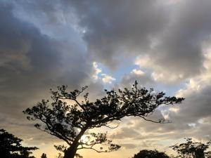
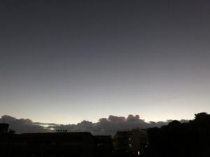
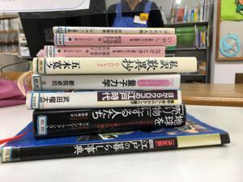

うるがいの話 ある日
最新: 市立図書館へ行く【うるがいの話 ある日】とは 一日だけのプログです
『うるがいの話』の最新一日だけのプログで、通信料が少なく経済的だ。カニの画像をクリックすると全ての日付が載る『うるがいの話』サイトを表示します
|
|
【うるがいの話】 うるがい(ｳﾙｶﾞｲ urugai)とは、『もずくがに』の名前でとても大きくなります。 |
|---|---|
|
|
【カミマヤーの話】 猫のことを方言でマヤーといいます。カミマヤー（kamimayaa）とは、神の猫のことです。 |
|
【たながぁの音楽】 たながぁ（ﾀﾅｶﾞｰ tanagaa）とは手長えびのことで、何種類かあり大きいのは車 エビぐらいになります。 |

|
【ぶながぁの話】 ぶながぁ(ﾌﾞﾅｶﾞｰ bunagaa)とは、赤い髪の毛、赤い身体、そして身長は１ｍ２０ｃｍ ぐらい、川の蟹を食べているの目撃された。場所は沖縄県国頭郡大宜味村のと ある村僕の隣近所に住んでいる爺さんから、聞いた話です。 |
|
|
【ギーマの話】 ギーマ(giima)とは、山原の里山に咲くスズランに似た、 花を付けます。実は食べられます、 気が付くと口の周りが紫になっています。 |
2022年10月29日 (土）市立図書館へ行く
15:22
  
返却期限は火曜日だったが、今日借りていた８冊を返却した。あとでもめない
ように、返却した証拠の写真を撮る。そして、暫定処置の３冊を借りることに
した。窓口も混んで、３名で対応をした。どこまで手で管理するのか興味があ
った、一応仮のシステムで対応しているようだが。フムフム、いずれにしろ大
変だ。子供から、２週間前に決まる筈だった会社は、内地にある本社の採用部
門で、以前に会社を２度辞めているのが原因で不採用になったとのこと。ウー
ンなんかおかしい、事前に知っていた筈なのに・・・・。でも、新しく決まっ
た会社は、子供にとっていい会社のようである。未納の年金二月分の請求書を
置いて帰っていった（親が、納付するのである）。
１５時１８分 ビットコインの総資産 ￥８、８２９↑